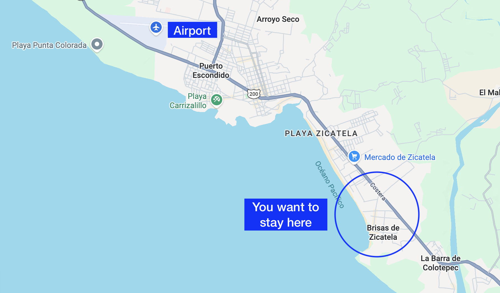

Freitag
5. Nov.
Abends
Puerto Escondido · Mexiko
ablauf
Samstag
6. Nov.
16 Uhr – spät
Die Hochzeitsfeier
Trauung, danach Dinner, Drinks und Tanzen.
DresscodePartystimmung. Für die Männer gern bunte Hemden und Shorts, für die Frauen bunte Kleider. High Heels sind nicht nötig.
Sonntag
7. Nov.
14 Uhr – Sonnenuntergang
Recovery Hangout
was ihr in puerto machen könnt
Puerto ist ein touristischer Strandort, bekannt für seine Strände, den Surf, das Nachtleben und die Mischung aus Locals und internationalen Gästen. Meistens ist man in Flip-Flops und Bikini oder Badehose unterwegs. Das meiste spielt sich draußen im Sand ab.
Surfen & Strand
Puerto ist berühmt für seine Wellen. Sieben Strände stehen zur Auswahl.
Wellness & Sport
Ein sehr aktiver Ort. Es gibt alles, von Yoga- und HIIT-Kursen über Beachvolleyball bis hin zu vielem mehr.
Essen
Meeresfrüchte ohne Ende. Unsere Favoriten: La Mariinera, El Chebichero und Attaraya.
Nachtleben
Günstige Biere an der Esquina, schicke Cocktails auf einem Rooftop oder Feiern im Paraiso. Ihr habt die Wahl.
Natur
Im November beginnt die Walsaison. Bei einer Bootstour am Morgen seht ihr Delfine und fangt euer Mittagessen selbst.
Wetter Jeden Tag sonnig und heiß, etwa 28–31 °C.
Ist Puerto sicher?
Puerto ist ein Touristenort für Einheimische und internationale Gäste gleichermaßen und im Allgemeinen sehr sicher. Überfälle oder Taschendiebstähle sind hier äußerst selten. Trotzdem gilt, wie an jedem Reiseziel: mit dem üblichen Maß an Vorsicht und gesundem Menschenverstand unterwegs sein.
Noch ein paar Tage übrig?
über puerto hinaus
Oaxaca-Stadt
Eine unserer Lieblings-Food-Städte der Welt, mit wunderschöner Architektur und jeder Menge Kunst. Wenn ihr noch nicht da wart: unbedingt hin!
Mexiko-Stadt
Vielleicht unsere Lieblingsstadt der Welt. Lebendig, vielseitig, historisch, künstlerisch. Es gibt mehr zu erleben, als ihr je schaffen könntet.
Mit dem Auto
San José del Pacífico, ein süßes Bergdorf. Chacahua, ein Lagunendorf. Mazunte, ein Hippie-Strand.
Etwas weiter weg
San Cristóbal de las Casas für die Natur pur. Mérida für koloniale Gassen, großartiges Essen aus Yucatán und Cenoten und Maya-Ruinen ganz in der Nähe. Und vieles mehr.
Hilfe bei der Reiseplanung?
Ihr wollt Unterstützung beim Planen? Fragt uns einfach.
anreise
MEX→PXM
Über Mexiko-Stadt
Nach Mexiko-Stadt fliegen und von dort mit einem günstigen Inlandsflug von Volaris oder Viva direkt weiter nach Puerto Escondido.
OAX→3 Std. Bus
Über Oaxaca
Nach Oaxaca-Stadt fliegen und mit dem Bus in drei Stunden über die Berge. Dauert länger, dafür seht ihr Oaxaca.
Unterkunft
wohnt in la punta.

Wir halten Zimmer frei
100–150 USD
Pro Zimmer und Nacht, in einem bezahlbaren Hotel in La Punta. Sagt uns Bescheid, dann reservieren wir eins für euch.
Zur Feier kommen
Wir organisieren den Transport von La Punta zur Location. So müsst ihr euch um nichts kümmern und nichts selbst fahren.
Vorher
día de muertos in oaxaca
Wenn ihr mehr Zeit habt: Wir feiern das Wochenende vor der Hochzeit Día de Muertos in Oaxaca. Meldet euch, wenn ihr Lust habt. Unterkünfte sind schnell ausgebucht und können teuer werden.
Danach
bleibt mit uns in puerto!
Wir bleiben den Rest des Jahres in Puerto Escondido. Bleibt und hängt mit uns ab.
Und außerdem...
feier in deutschland
Eine kleinere Feier in Alex' Heimatstadt für seine Familie und Freunde in Deutschland. Wenn ihr in der Nähe seid, kommt gern vorbei, sagt uns einfach Bescheid!
köln
Sa. · 24. Juli · 2027
- Ort
- FRÜH Em Tattersall, Köln-Weidenpesch
- Zeit
- Ab 16 Uhr
- Dresscode
- Leger
- Standesamt
- Ort & Uhrzeit noch offen
Was ihr wissen solltet
faq.
Was soll ich anziehen?
In Puerto ist es heiß und feucht, und die Hochzeit findet am Strand statt. Am besten zieht ihr also etwas Leichtes und Luftiges an. Es ist keine förmliche Veranstaltung, wir freuen uns über bunte, fröhliche und bequeme Outfits.
Wo soll ich übernachten?
Puerto: Wir halten Zimmer in einem bezahlbaren Hotel in La Punta frei, 100 bis 150 USD pro Zimmer und Nacht. Sagt uns Bescheid, dann reservieren wir eins für euch. Den Transport von La Punta zur Location organisieren wir ebenfalls.
Brauche ich einen Mietwagen?
Puerto ist klein und gut zu Fuß zu erkunden. Mit dem Taxi kommt ihr ebenfalls einfach und günstig überall hin, ihr braucht also keinen (wir haben nie einen). Wenn ihr länger bleiben und/oder mehr sehen wollt, könnt ihr einen Roller oder ein Auto mieten. Wir helfen euch, den richtigen Verleih zu finden.
Sind Kinder erlaubt?
Ja, eure Kinder sind herzlich willkommen!